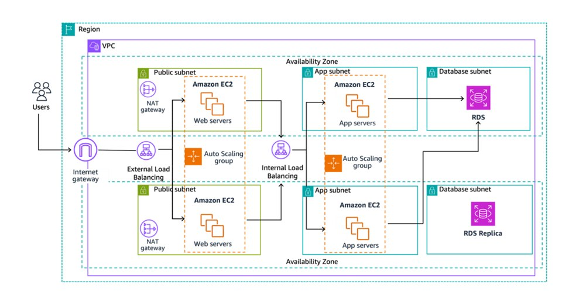

Three-Tier Web Application Architecture on AWS
Overview
This project demonstrates the design and deployment of a scalable three-tier web application architecture on AWS. The environment was provisioned using AWS CloudFormation to automate the creation of networking and compute resources, including the VPC, subnets, and EC2 instances. The architecture separates the web, application, and database layers to improve security, scalability, and maintainability following AWS best practices.
The application is deployed within a Virtual Private Cloud (VPC) spanning multiple Availability Zones. The web tier is hosted on EC2 instances in public subnets and is accessible through an internet-facing Application Load Balancer. Traffic is distributed across multiple web servers using Auto Scaling groups to support scalability and high availability. An internal load balancer routes traffic from the web tier to application servers running on EC2 instances in private subnets.
The application tier communicates securely with an Amazon RDS database deployed in private database subnets. The database layer includes a primary RDS instance and a read replica to support performance and redundancy. NAT Gateways allow instances in private subnets to access the internet for updates and package installations without exposing them to inbound traffic.
Security was implemented using subnet isolation, security groups, and controlled access between tiers. This layered architecture ensures that only the web tier is publicly accessible, while the application and database tiers remain protected in private subnets. Monitoring and scaling capabilities are supported through Auto Scaling groups and AWS management tools.
This project demonstrates the implementation of a highly available and scalable AWS architecture using infrastructure automation and layered network design. The architecture is designed to support growth and can be extended with additional monitoring, automation, and deployment pipelines.
Key Features
- Three-tier architecture (Web, Application, Database)
- Multi-AZ deployment
- Virtual Private Cloud (VPC)
- Public and private subnets
- Internet Gateway
- NAT Gateways
- EC2 instances
- Auto Scaling Groups
- External Load Balancer
- Internal Load Balancer
- Amazon RDS
- RDS Read Replica
- Infrastructure as Code using CloudFormation
- Secure network architecture
Architecture Components
Networking
- Virtual Private Cloud (VPC)
- Public subnets for web tier
- Private subnets for application tier
- Private database subnets
- Internet Gateway NAT Gateways
Compute
- EC2 Web Servers (Auto Scaling Group)
- EC2 Application Servers (Auto Scaling Group)
- Load Balancers
Database
- Amazon RDS Primary Instance
- Amazon RDS Read Replica
Skills demonstrated
- AWS architecture design
- CloudFormation deployment
- VPC configuration
- Subnet design
- EC2 configuration
- Auto Scaling configuration
- Load balancing
- NAT Gateway configuration
- RDS deployment
- High availability design
- Infrastructure as Code
- Network security design
Architecture Highlights


- Multi-tier network isolation
- Load-balanced web and application tiers
- Auto Scaling for high availability
- Database redundancy with read replica
- Secure private subnet architecture
- Automated infrastructure deployment
Explore my code on GitHub !
Lessons Learned
- Gained hands-on experience deploying infrastructure using AWS CloudFormation, which helped me understand the benefits of Infrastructure as Code and repeatable deployments.
- Learned how to design a multi-tier architecture by separating web, application, and database layers for better security and scalability.
- Improved my understanding of VPC networking, including public and private subnets, route tables, and internet access configuration.
- Configured Internet Gateways and NAT Gateways to allow secure communication between public and private resources.
- Implemented Auto Scaling Groups to improve availability and ensure the application can handle changing traffic loads.
- Learned how Application Load Balancers distribute traffic across multiple instances for reliability and performance.
- Strengthened my knowledge of security best practices, including subnet isolation and security group configuration.
- Learned how to deploy and configure Amazon RDS with a primary database and read replica for improved performance and redundancy.
- Gained experience troubleshooting connectivity issues between tiers using security groups and networking rules.
- Developed a better understanding of how AWS architectures are designed for high availability and scalability.
- Learned how Infrastructure as Code simplifies environment setup and reduces manual configuration errors.
- Improved my ability to read and interpret AWS architecture diagrams and map them to real resources.